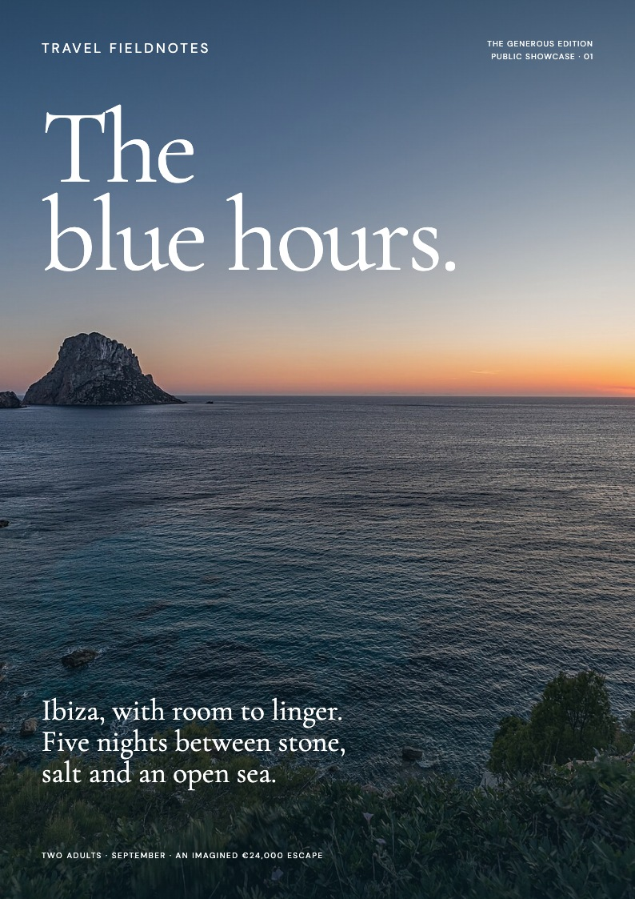
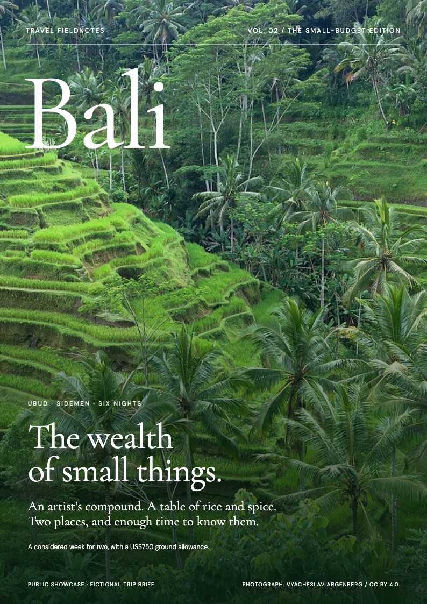

The Blue Hours
Coves, a remarkable place to stay, a day on the water and the island beyond the dance floor. An expansive brief, edited into a coherent escape.
€24,000 fictional planning allowance · excluding flights
A lavish Mediterranean escape. A small-budget journey through Bali. Different choices, the same care for place, story and the details that make a trip work.

Coves, a remarkable place to stay, a day on the water and the island beyond the dance floor. An expansive brief, edited into a coherent escape.
€24,000 fictional planning allowance · excluding flights

Ubud and Sidemen, with time for the craft, food and working landscapes between them. Carefully chosen homestays and fewer long transfers make room for more.
IDR 12 million fictional planning allowance · excluding flights
Travel Fieldnotes is an open-source Codex skill for researched, illustrated travel guides. Give it your dates, interests, budget and fixed plans. It helps turn them into something useful—and worth reading.
$travel-fieldnotes